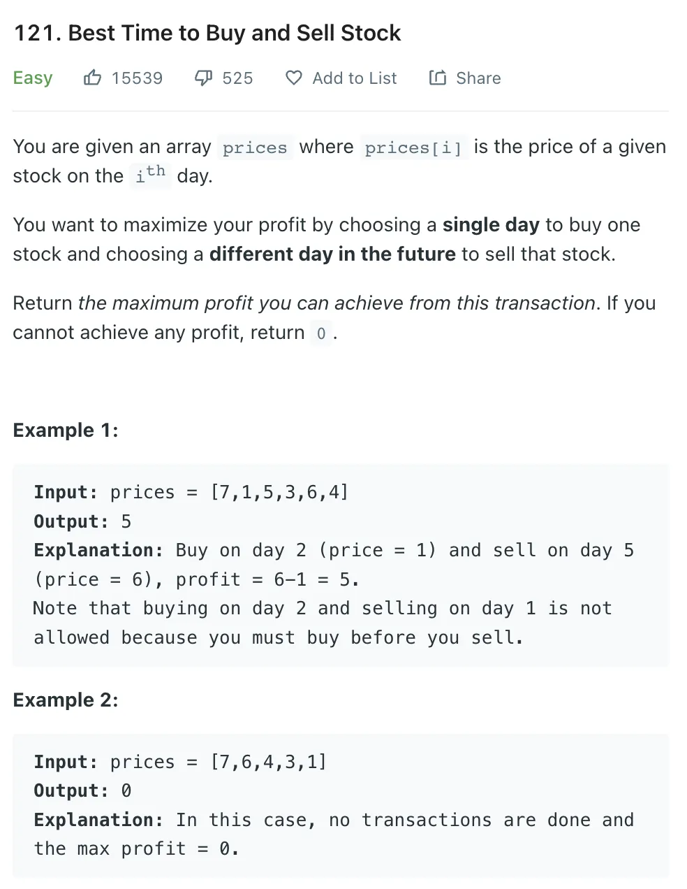
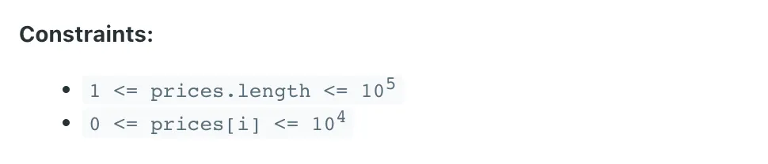

121. Best Time to Buy and Sell Stock
Question


✍🏽 My Solution
Runtime: 1 ms, faster than 100.00% of Java online submissions for Best Time to Buy and Sell Stock.
Memory Usage: 76.7 MB, less than 67.41% of Java online submissions for Best Time to Buy and Sell Stock.
class Solution {
public int maxProfit(int[] prices) {
int maxProfit = 0; // 最大收益
int minPrice = Integer.MAX_VALUE; // 歷史低點
int n = prices.length;
for (int i = 0; i < n; i++) {
if (prices[i] < minPrice) minPrice = prices[i];
maxProfit = Math.max(maxProfit, prices[i] - minPrice);
}
return maxProfit;
}
}
class Solution {
public int maxProfit(int[] prices) {
int maxProfit = 0; // 最大收益
int minPrice = Integer.MAX_VALUE; // 歷史低點
for (int i = 0; i < prices.length; i++) {
if (prices[i] < minPrice) {
minPrice = prices[i];
} else if (prices[i] - minPrice > maxProfit) {
maxProfit = prices[i] - minPrice;
}
}
return maxProfit;
}
}
func maxProfit(prices []int) int {
maxProfit := 0
minPrice := 10000
for _, price := range prices {
if price < minPrice {
minPrice = price
} else if price - minPrice > maxProfit {
maxProfit = price - minPrice;
}
}
return maxProfit
}
🧠 Thought Process
- Why did I choose this particular implementation?
- 參考力扣
- 題目：只能交易一次
- 用一個變數紀錄歷史低點，假設在那天買股票
- 如果我們在第i天賣出股票能得到的利潤就是 prices[i] - minPrice
- 因此，我们只需要遍历价格数组一遍，记录历史最低点，然后在每一天考虑这么一个问题：如果我是在历史最低点买进的，那么我今天卖出能赚多少钱？当考虑完所有天数之时，我们就得到了最好的答案。
- What is the time/space complexity of my solution? How do I know?
- time: O(n)
- space: O(1)
- What mistakes did I make?
- 忘了套回圈XD
Solution #1 [王爭-前綴後綴統計]
Runtime: 5 ms, faster than 10.02% of Java online submissions for Best Time to Buy and Sell Stock.
Memory Usage: 85.6 MB, less than 5.09% of Java online submissions for Best Time to Buy and Sell Stock.
class Solution {
public int maxProfit(int[] prices) {
int n = prices.length;
int[] max = new int[n];
int curMax = 0;
for (int i = n-1; i >= 0; i--) {
max[i] = curMax;
curMax = Math.max(curMax, prices[i]);
}
int result = 0;
for (int i = 0; i < n; i++) {
result = Math.max(result, max[i] - prices[i]);
}
return result;
}
}
Explanation (in my words)
- How does their solution work?
- 用一個數組紀錄後綴 int[] max，從後遍歷數組，將後綴最大存進該數組下標
- 再次順序遍歷數組，找最大收益
- What is the space/time complexity of their solution?
- time: O(n)
- space: O(n)
Solution #2 [DP二維]
Runtime: 65 ms, faster than 5.09% of Java online submissions for Best Time to Buy and Sell Stock.
Memory Usage: 114.8 MB, less than 5.08% of Java online submissions for Best Time to Buy and Sell Stock.
class Solution {
public int maxProfit(int[] prices) {
int n = prices.length;
int[][] dp = new int[n][2];
dp[0][0] = 0;
dp[0][1] = -prices[0];
for (int i = 1; i < n; i++) {
dp[i][0] = Math.max(dp[i-1][0], dp[i-1][1] + prices[i]);
dp[i][1] = Math.max(dp[i-1][1], -prices[i]);
}
return dp[n-1][0];
}
}
Explanation (in my words)
-
How does their solution work?
- 二維數組DP，紀錄持有股票
-
prices[I]只出现在k = 1的情况。因为如果只有一次交易的话，那每天的dp[i][1]状态（第i天手持股票）只会是因为我在当天购买了股票，使得我目前的资本为-prices[I]，所以是负数。
每天的dp[i][1]状态不会依赖于dp[i-1][0]， 也就是当k =1的时候dp[i][1] 不等于dp[i-1][0] - prices[I]。
-
What is the space/time complexity of their solution?
- time: O(n)
- space: O(n)
Solution #3 [DP一維]
class Solution {
public int maxProfit(int[] prices) {
int n = prices.length;
int dp_i_0 = 0;
int dp_i_1 = -prices[0];
for (int i = 1; i < n; i++) {
dp_i_0 = Math.max(dp_i_0, dp_i_1 + prices[i]);
dp_i_1 = Math.max(dp_i_1, -prices[i]);
}
return dp_i_0;
}
}
Explanation (in my words)
- How does their solution work?
- 因為我們每一次只會用到前一個數字，用一個變數紀錄即可
- What is the space/time complexity of their solution?
- time: O(n)
- space: O(1)